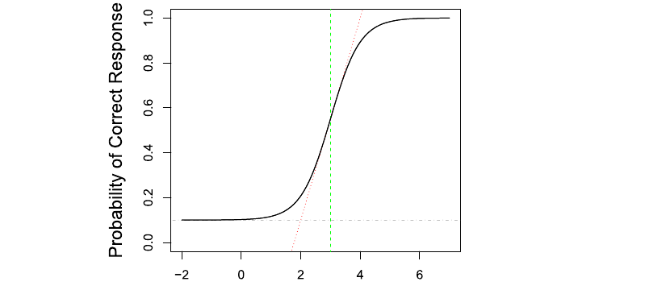
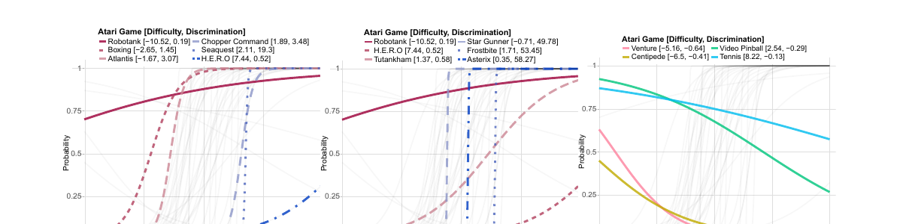
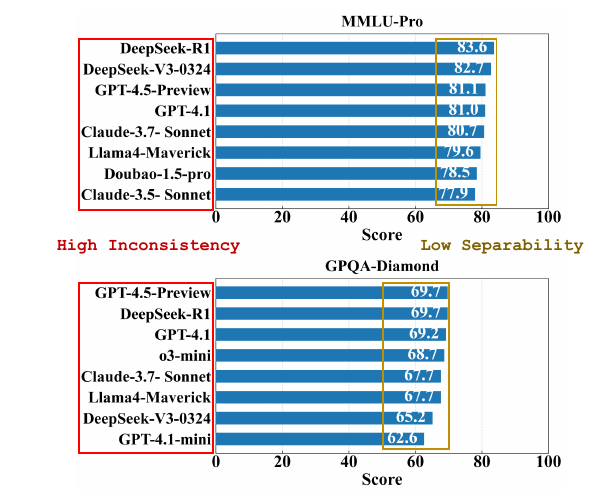
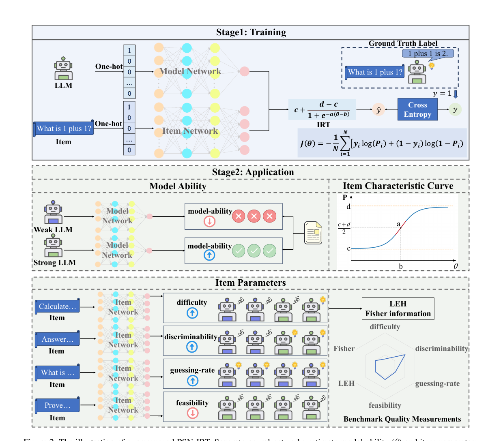
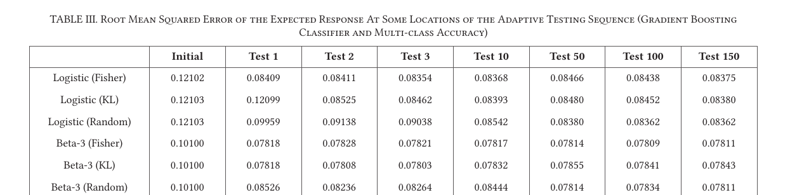
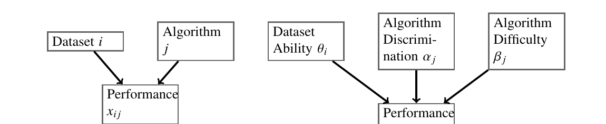
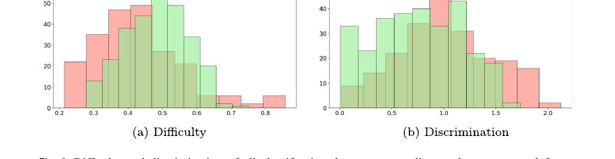
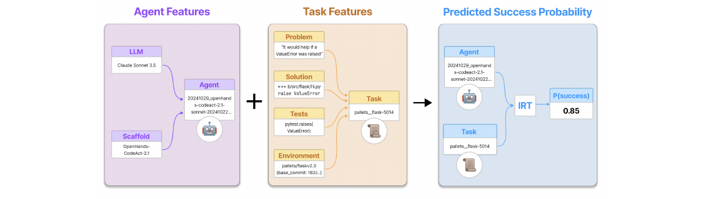

우리 측정 모델이 실제로 어떻게 서는지를 정하는 부분이다. 문항반응이론(IRT)이 무엇을 어떻게 추정하는지, 그리고 그것을 AI 평가에 옮긴 선행들이 우리에게 어떤 구현을 보여주는지를 검토한다. 핵심은 하나다. 어떤 응시자로 재든 변하지 않는 문항 난이도(표본 불변성)가 곧 우리가 원하는 SUT-불변성이다.
먼저, IRT 용어 (시험에 빗대어)
문항 난이도 b (difficulty)그 문항을 맞히기 어려운 정도. 우리 연구에서는 시나리오 위험도. 값이 클수록 어렵다.
응시자 능력 θ (ability)수험생의 실력. 우리 연구에서는 AV 강건성. 값이 클수록 잘 버틴다.
변별력 a (discrimination)그 문항이 잘하는 응시자와 못하는 응시자를 얼마나 잘 가르는가(곡선의 기울기). 음수면 잘하는 사람이 오히려 틀리는 이상한 문항(잡음).
추측·하한 c (guessing)능력이 아주 낮아도 맞힐 최소 확률(곡선의 맨 아래 점근선). 우리 연구의 회피가능성 하한 u가 바로 이 자리다.
문항특성곡선 (ICC)능력 θ가 높아질수록 정답 확률이 어떻게 오르는지 그린 S자 곡선(아래 Fig 1).
표본 불변성 (specific objectivity)어떤 응시자 집단으로 추정하든 문항 난이도가 변하지 않는 성질. 이것이 곧 SUT-불변성이다.
등급응답모형 (GRM)정답/오답이 아니라 순서형(예: 무사고·경상·중상)을 다루는 IRT 확장. 우리 심각도 확장에 쓰인다.
검토 순서: Martínez-Plumed 2019 ✓ → Dual Indicators 2020 ✓ → Zhou PSN-IRT(AAAI) ✓ → Song & Flach ✓ → Kandanaarachchi ✓ → Pereira ✓ → Agent Psychometrics ✓ → 고전 이론(Rasch·Samejima 등)만 개념 정리로 남음. 섹션 A 사실상 완료.
Artificial Intelligence 20192019IRT for ML기반 문헌
Item response theory in AI: Analysing machine learning classifiers at the instance level
F. Martínez-Plumed, R. B. C. Prudêncio, A. Martínez-Usó, J. Hernández-Orallo. Artificial Intelligence 271 (2019) 18–42. doi:10.1016/j.artint.2018.09.004.
한눈에IRT를 기계학습 분류기 평가에 본격 적용한 기반 문헌이다. 데이터셋의 각 인스턴스를 시험 문항으로, 각 분류기를 수험생으로 두고, 누가 어떤 인스턴스를 맞혔는지 적은 표(response matrix)에서 인스턴스의 난이도·변별력·추측과 분류기의 능력을 함께 추정한다. 핵심은 IRT가 문항과 응시자 정보를 동시에 준다는 이중성(dual character)이다. 우리는 이 틀을 시나리오(문항)와 AV(응시자)로 옮긴다.
Fig 1 · 3PL 문항특성곡선(ICC)

능력 θ가 높아질수록 정답 확률이 오르는 S자 곡선. 기울기 = 변별력 a, 가운데 위치 = 난이도 b, 맨 아래 점근선 = 추측 하한 c. 이 점근선이 우리 회피가능성 하한 u와 같은 자리다. (클릭 시 확대)
접근
인스턴스=문항, 분류기=응시자, IRT로 양쪽 함께 추정
추정 모수
인스턴스 난이도 b·변별력 a·추측 c, 분류기 능력 θ
핵심 개념
dual character, 음의 변별력 = 잡음 인스턴스
우리와의 대응
인스턴스→시나리오, 분류기→AV, 추측 하한→avoidability
연구 배경
기계학습 평가는 보통 정확도 한 숫자로 분류기를 줄세운다. 그러나 그 값은 어떤 데이터(인스턴스)로 쟀는지에 좌우되고, 정작 "어떤 인스턴스가 어려운가"는 따지지 않는다. 교육·심리측정의 IRT는 바로 이 문제, 곧 문항 난이도와 응시자 능력을 분리해 추정하기 위해 발전했다. 저자들은 그 IRT를 기계학습으로 가져와, 분류기를 정확도 한 숫자가 아니라 인스턴스 단위로 분석한다.
무엇을 했나
데이터셋의 각 인스턴스를 문항, 각 분류기를 응시자로 두고, 여러 분류기가 각 인스턴스를 맞혔는지(1/0)를 모은 response matrix에 IRT를 적합한다. 그러면 인스턴스마다 난이도·변별력·추측이, 분류기마다 능력이 나온다. 저자들은 이를 IRT의 이중성으로 설명한다"IRT has a dual character in the way that we get information about the items (instances) but also about the respondents (classifiers)"(§2 본문). 이 곡선의 모양(난이도·변별력·추측)은 Fig. 1에 그려져 있다.
방법론 상세
response matrix U:M개 분류기 × N개 인스턴스, 각 칸은 정답(1)/오답(0). 우리의 충돌 0/1 표와 같은 구조다.
IRT 적합: 2PL 또는 3PL로 인스턴스 모수(난이도 b, 변별력 a, 추측 c)와 분류기 능력 θ를 동시에 추정한다.
변별력의 뜻:그 인스턴스가 잘하는 분류기와 못하는 분류기를 얼마나 잘 가르는가"the discrimination parameter can be seen as a measure of how effective each instance is for differentiating between [classifiers]"(§4).
음의 변별력: 잘하는 분류기가 오히려 틀리는 이상한(잡음·오라벨) 인스턴스. 이를 골라 제거하면 능력 추정이 깔끔해진다.
추측 하한: 능력이 낮아도 맞힐 최소 확률(Fig 1의 아래쪽 점근선).
결과
추정된 분류기 능력 θ가 실제 정확도와 관련되어, IRT 능력이 분류기 실력을 회복함을 보인다(2PL에서는 일부 반직관적 관계도 관찰된다). 인스턴스의 난이도·변별력으로 데이터셋의 어떤 점이 어렵고 어떤 점이 잡음인지 ICC로 시각화한다. 정확도 한 숫자로는 보이지 않던 "무엇이 어려운가, 어떤 분류기가 왜 강한가"가 드러난다.
한계
정적 분류 과제다. 인스턴스가 고정돼 있어 응시자(분류기)에 반응하지 않는다. closed-loop도 적대적 상호작용도 없다. 또 1차원 능력을 가정하며(다차원은 별도 확장), 모수 추정에는 충분히 다양한 분류기 집단이 필요하다.
본 연구와의 관계
이 논문은 우리 모델의 직접 바탕이다. 인스턴스 = 시나리오, 분류기 = AV, 정답/오답 = 무충돌/충돌로 그대로 대응한다. response matrix가 우리 충돌 0/1 표이고, 인스턴스 난이도가 시나리오 위험도 b, 분류기 능력이 AV 강건성 θ다. 특히 3PL의 추측 하한(Fig 1 곡선의 맨 아래)은 우리 회피가능성 하한 u와 같은 자리에 있다. 능력이 아무리 높아도 피할 수 없는 충돌의 몫이다.
차이는 두 가지이고, 그 차이가 곧 우리 기여다. 첫째, 우리 "문항"(시나리오)은 응시자(AV)에 반응한다(reactivity). 정적 인스턴스가 아니다. 둘째, 우리는 위험도를 단계적으로 높이는 severity 축과 회피가능성을 모델 구조로 더한다. 그래서 Martínez-Plumed의 틀을 closed-loop 적대 주행으로 확장하는 것이 우리 작업이다.
IEEE Transactions on Games 20202020IRT for game agents최근접 선행
Dual Indicators to Analyse AI Benchmarks: Difficulty, Discrimination, Ability and Generality
F. Martínez-Plumed, J. Hernández-Orallo. IEEE Transactions on Games 12(2) (2020). doi:10.1109/TG.2018.2883773.
한눈에우리에게 가장 가까운 선행이다. IRT를 정적 분류기가 아니라 게임을 푸는 AI 에이전트 평가에 적용한다. 아타리 게임 모음(ALE)과 일반 비디오게임 AI 대회(GVGAI)의 각 게임을 문항, 각 AI 기법을 응시자로 두고, 게임의 난이도·변별력과 에이전트의 능력·일반성(generality)을 추정한다. 문항이 정적 분류 사례에서 게임 과제로 넓어졌지만, 게임은 여전히 에이전트에 반응하지 않는 고정 과제다.
Fig 2 · 실제 아타리(ALE) 게임들의 ICC

아타리 게임마다 IRT로 [난이도, 변별력]이 매겨진다. 오른쪽 패널의 내려가는 곡선은 음의 변별력 게임(잘하는 에이전트가 오히려 못 푸는 과제)이다. (클릭 시 확대)
접근
게임=문항, AI 에이전트=응시자, IRT로 양쪽 추정
벤치마크
ALE(아타리 2600) · GVGAI(실시간 2D 격자 게임)
지표
과제 측 난이도·변별력, 에이전트 측 능력·generality
우리와의 거리
가장 가깝되, 정적 과제 평가(반응형 아님)
연구 배경
AI 벤치마크는 보통 평균 점수로 기법을 줄세운다. 저자들(Martínez-Plumed 2019의 후속)은 그 대신 IRT로 과제와 에이전트를 함께 분석하자고 본다. 벤치마크 결과를 과제 쪽 두 지표(난이도·변별력)와 에이전트 쪽 두 지표(능력·일반성)로 분해하는 것이다.
무엇을 했나
ALE와 GVGAI 게임을 문항으로, 그것을 푸는 AI 기법을 응시자로 둔다 "a problem or task in AI (e.g., an ALE or GVGAI game), and an individual, subject or respondent can be identified with an AI method"(§II). 각 게임의 난이도·변별력을 IRT로 추정하고, 에이전트의 능력과 새 지표 generality(여러 난이도에서 고르게 잘하는가)를 매긴다. 실제 게임들의 ICC는 Fig. 2에 있다.
방법론 상세
응답 행렬: 게임 × AI 기법, 각 칸은 그 기법이 그 게임을 (기준 이상) 풀었는가. Martínez-Plumed 2019의 response matrix를 게임 과제로 옮긴 것이다.
과제 지표: 3PL ICC로 게임 난이도 b·변별력 a를 추정한다. Fig 2처럼 아타리 게임마다 [난이도, 변별력] 값이 매겨진다(예: Boxing은 쉽고 H.E.R.O는 어렵다).
음의 변별력 게임: 잘하는 에이전트가 오히려 못 푸는 게임(Venture·Centipede 등), Fig 2 오른쪽의 내려가는 곡선이다.
에이전트 지표: 능력 θ에 더해 generality(능력 곡선이 난이도 전반에서 평평한가)를 새로 제안한다.
검증: ICC가 게임의 difficulty·discrimination로 정렬됨을 보인다(§IV).
결과
IRT의 난이도·변별력을 실제 아타리·GVGAI 게임에 적용해, 게임마다 difficulty와 discrimination이 다르게 매겨짐을 보인다"the ICCs of those three most (and least) difficult ALE and GVGAI games with positive discrimination"(§IV). 능력과 점수의 관계, 음의 변별력 과제도 분석한다. 평균 점수 한 숫자로는 보이지 않던 "어떤 게임이 어렵고 어떤 에이전트가 왜 강한가"가 드러난다.
한계
가장 중요한 한계는, 게임이 에이전트에 반응하지 않는 고정 과제라는 점이다. ICC는 정해진 게임 집합에 대해 추정되며, 과제가 응시자를 적대적으로 공격하지 않는다. 또 능력을 1차원(+generality)으로 다룬다.
본 연구와의 관계
이것이 우리 신규성의 경계선이다. "IRT를 AI 에이전트에 적용"하는 것은 이미 이 논문이 했으므로, 우리 기여는 거기서 더 나아간 부분이어야 한다. 핵심 차이는 closed-loop 적대성이다. Dual Indicators의 게임은 가만히 있는 문항이지만, 우리 적대 시나리오는 AV의 행동에 반응한다(reactivity). 또 우리는 위험도를 단계적으로 높이는 severity 축과 회피가능성 하한을 모델 구조로 더한다.
그래서 우리는 "IRT를 AI에 처음 적용"이라고 주장하지 않는다. 대신 "반응하는 closed-loop 적대 주행 평가에 측정이론을 처음 가져오고, reactivity·severity·avoidability 세 구조를 형식화"한다고 기여를 한정한다. Dual Indicators는 논문에서 반드시 정면으로 인용하고 차별화해야 하는 최근접 선행이다.
AAAI 20262026IRT for LLM benchmarks타깃 학회
Lost in Benchmarks? Rethinking Large Language Model Benchmarking with Item Response Theory
H. Zhou, H. Huang, Z. Zhao, L. Han, H. Wang, K. Chen, M. Yang, W. Bao, J. Dong, B. Xu, C. Zhu, H. Cao, T. Zhao. AAAI 2026 (arXiv:2505.15055). doi:10.1609/aaai.v40i41.40814.
한눈에IRT로 LLM 벤치마크의 측정 품질 자체를 진단한 최신 연구다. Pseudo-Siamese Network for IRT(PSN-IRT)로 문항(벤치마크 문제)의 난이도·변별력 등을 정밀 추정하고, 12개 LLM × 11개 벤치마크를 분석한다. 현재 벤치마크들이 측정 특성이 고르지 못하고, 난이도 천장이 낮으며, 문항이 포화되고, 데이터 오염이 있음을 보인다. 무엇보다 같은 모델들의 순위가 벤치마크마다 뒤바뀌는 불일치를 드러낸다.
Fig 1 · 벤치마크 간 순위 불일치와 약한 분리성

같은 상위 모델들의 순위가 MMLU-Pro와 GPQA-Diamond에서 뒤바뀌고(High Inconsistency), 상위권 점수가 좁게 몰려 차이를 가리기 어렵다(Low Separability). (클릭 시 확대)
Fig 2 · PSN-IRT 구조

1단계(학습): 모델망과 문항망이 IRT 식으로 결합해 정답 확률을 예측하고 교차 엔트로피로 학습한다. 2단계(적용): 모델 능력, 문항특성곡선, 문항 모수(난이도·변별력·추측률·feasibility)를 함께 산출한다. 문항과 응시자를 동시에 추정하는 dual character가 신경망으로 구현된 모습이다. (클릭 시 확대)
접근
PSN-IRT(IRT 기반 신경망)로 문항 특성·모델 능력 추정
규모
12개 LLM × 11개 벤치마크
진단
측정 불균일·난이도 천장 부족·문항 포화·데이터 오염
우리와의 연결
측정 관점 + 순위 불일치 + AAAI 적합성
연구 배경
LLM은 보통 벤치마크 평균 점수로 줄세운다. 그러나 그 점수가 "무엇을 얼마나 잘 측정하는가"는 따지지 않는다. 저자들은 벤치마크 자체를 측정 도구로 보고, 그 측정 품질을 IRT로 점검한다. 동기로 든 것이 순위 불일치와 약한 분리성이다. 같은 상위 모델들이 벤치마크마다 순서가 바뀌고, 상위권이 너무 몰려 차이를 못 가린다(Fig. 1) "many benchmarks show weak separability among top models, limiting the ability to understand performance differences"(§1 본문).
무엇을 했나
Pseudo-Siamese Network for Item Response Theory(PSN-IRT)를 제안한다(Fig. 2). IRT를 신경망 구조에 녹여, 벤치마크 문항의 난이도·변별력 같은 풍부한 특성과 모델 능력을 정밀하고 신뢰성 있게 추정한다. 모델망과 문항망이 IRT 식으로 결합해 정답 확률을 예측하도록 학습한 뒤, 모델 능력·문항특성곡선·문항 모수를 함께 산출한다. 이를 12개 LLM × 11개 벤치마크에 적용해 각 벤치마크의 측정 품질을 진단한다.
방법론 상세
응답 행렬: 모델 × 벤치마크 문항, 각 칸은 정답/오답. Martínez-Plumed·Dual Indicators와 같은 구조를 LLM 문항으로 옮긴 것이다.
PSN-IRT: IRT를 바탕으로 한 의사-샴(Pseudo-Siamese) 신경망 구조로, 문항 특성(난이도·변별력 등)과 모델 능력을 함께 추정한다.
진단 항목: 측정 특성 불균일, 난이도 천장 부족(어려운 문항이 모자라 상위 모델을 못 가름), 문항 포화(대부분이 다 맞힘), 데이터 오염.
순위 불일치:Fig 1처럼 MMLU-Pro와 GPQA-Diamond에서 같은 모델들의 순위가 뒤바뀌고, 상위권이 좁게 몰린다.
결과
"Through extensive experiments on 12 LLMs across 11 diverse datasets, we demonstrate that current benchmarks often suffer from uneven measurement properties, insufficient difficulty ceilings, item saturation, and data contamination"(§Results). 즉 벤치마크 점수가 모델 실력을 안정적으로 재지 못한다는 것이다. 상위 모델 간 약한 분리성 탓에 성능 차이를 이해하기도 어렵다.
한계
정적 문항 평가(질의응답)다. 문항이 모델에 반응하지 않는다. closed-loop도 적대적 상호작용도 아니며, 주행처럼 회피가능성·심각도 같은 도메인 구조도 없다. 진단 대상은 LLM 텍스트 벤치마크에 한정된다.
본 연구와의 관계
두 가지로 직접 닿는다. 첫째, "순위가 측정 도구(벤치마크)에 따라 뒤바뀐다"는 Fig 1의 문제의식이 우리 SUT 의존성(순위가 측정에 쓴 AV에 따라 뒤집힘)과 같은 종류다. 우리는 그 불안정을 측정이론의 불변성으로 바로잡으려 한다. 둘째, IRT 기반 평가가 AAAI에서 현재진행형으로 다뤄진다는 venue 적합성의 직접 근거다. 이 논문 자체가 AAAI 2026이다.
다만 PSN-IRT는 정적 텍스트 문항을 다룬다. 문항이 응시자에게 반응하지 않고, severity나 회피가능성 같은 축도 없다. 그래서 우리 reactivity·severity·avoidability 세 구조는 여전히 새 기여로 남는다. 정리하면 Zhou는 "측정 관점이 옳고 시의적절하다"를 보증하고, 우리는 그것을 반응형 closed-loop 주행으로 확장한다.
IJIMAI 20212021IRT + adaptive testing평가 효율
Efficient and Robust Model Benchmarks with Item Response Theory and Adaptive Testing
H. Song, P. Flach. International Journal of Interactive Multimedia and Artificial Intelligence 6(5) (2021). University of Bristol.
한눈에적은 문항으로도 모델을 효율적·강건하게 평가하는 법을 IRT와 적응형 평가(adaptive testing)로 보인다. 시험에서 다음 문항을 응시자 능력에 맞춰 고르듯, Fisher 정보가 가장 큰(가장 정보가 많은) 문항을 차례로 골라 능력을 추정한다. 165개 데이터셋·72개 모델 실험에서, 정보량 기반으로 고르면 한두 문항 만에 추정이 수렴한다. 우리 decision study(정보량 기반 시나리오 선택)의 직접 근거다.
Table III · 테스트 수에 따른 추정 오차(RMSE)

Fisher 정보 기반 선택은 Test 1에서 이미 낮은 오차로 떨어져 평평하게 유지(한두 문항 만에 수렴)되는 반면, Random 선택은 여러 문항에 걸쳐 천천히 내려간다. 정보량이 큰 문항을 고르면 적은 횟수로 충분하다는 증거. (클릭 시 확대)
접근
IRT + 적응형 평가(computerized adaptive testing)
문항 선택
Fisher 정보가 큰 문항을 우선(KL·Random과 비교)
규모
165개 데이터셋 × 72개 모델
우리와의 연결
적은 시나리오로 강건성 추정(decision study)
연구 배경
모델을 평가하려고 전체 벤치마크를 전부 돌리면 비싸다. 교육 평가에서는 응시자마다 능력에 맞는 문항을 적응적으로 골라(computerized adaptive testing) 적은 문항으로 실력을 잰다. 저자들은 이 적응형 평가를 기계학습 모델 벤치마킹에 가져온다.
무엇을 했나
IRT로 문항(데이터셋·인스턴스)의 난이도·변별력을 추정한 뒤, Fisher 정보가 가장 큰 문항, 즉 현재 능력 추정에서 가장 정보가 많은 문항을 차례로 골라 모델 능력을 적응적으로 추정한다. 165개 데이터셋·72개 모델의 응답으로 그 효과를 실험한다.
방법론 상세
IRT 적합: Logistic IRT와 Beta-3 IRT로 문항 모수를 추정한다.
적응형 선택:매 단계에서 Fisher 정보(또는 KL 정보)가 큰 문항을 골라 다음 테스트로 삼는다.
비교: Fisher · KL · Random 선택을 나란히 비교한다.
측정: 테스트를 더할수록 기대 응답 오차(RMSE)가 어떻게 변하는지(Table III), 적응형 시퀀스가 지표 간 일관되는지(Kendall's Tau)를 본다.
결과
정보량 기반(Fisher) 선택은 한 문항 만에 오차가 수렴한다. Table III에서 Logistic·Beta-3 모두 Fisher는 Test 1에서 이미 낮은 RMSE로 떨어져 그대로 평평해지는 반면, Random은 여러 문항에 걸쳐 천천히 내려간다. 본문도 같은 점을 적는다 "there are various cases where it took only 1 or 2 tests (out of 165 datasets) before the testing sequence reaches the convergence point"(§IV).
한계
정적 문항(데이터셋·인스턴스)에 대한 적응형 선택이다. 문항이 응시자에 반응하지 않으며, 텍스트·표 형식의 ML 과제에 한정된다. 또 적응형 선택은 미리 추정된 문항 모수를 전제한다.
본 연구와의 관계
이 논문은 우리 decision study의 직접 근거다. 우리도 모든 시나리오를 모든 AV로 다 돌릴 필요 없이, 정보량(Fisher)이 큰 시나리오만 골라 AV 강건성을 적은 횟수로 추정할 수 있다. Song & Flach의 "문항 = 데이터셋"을 "문항 = 시나리오"로 옮기면 그대로 적용된다.
차이는 우리 시나리오가 AV에 반응한다는 점(reactivity)과 위험도 단계·회피가능성 구조가 더해진다는 점이다. 적응형 선택 자체는 평가 비용을 줄이는 실용적 장치로 그대로 가져온다. 시뮬레이션 주행은 한 번 한 번이 비싸므로, 정보량 기반 시나리오 선택은 우리 연구에서 특히 값지다.
JMLR 20232023AIRT (algorithm IRT)측정 틀의 일반성
Comprehensive Algorithm Portfolio Evaluation using Item Response Theory
S. Kandanaarachchi, K. Smith-Miles. Journal of Machine Learning Research (2023). arXiv:2307.15850.
한눈에IRT를 알고리즘 포트폴리오 평가로 일반화한다(AIRT). 흥미롭게도 IRT를 뒤집어, 데이터셋을 응시자(능력 θ), 알고리즘을 문항(난이도 β·변별력 α)으로 둔다. 이렇게 하면 알고리즘마다 일관성(consistency)·변칙성(anomalousness), 그리고 "어디까지 어려운 사례를 감당하는가"라는 난이도 한계가 새 특성으로 나온다. 측정 틀이 알고리즘 비교에 폭넓게 유용함을 보인다.
Fig 8 · IRT를 알고리즘 평가 영역에 매핑

AIRT의 매핑: 데이터셋이 응시자(능력 θi), 알고리즘이 문항(변별력 αj·난이도 βj)이 되는 뒤집힌 IRT 설정. 표준 방향(인스턴스=문항)과 반대다. (클릭 시 확대)
접근
AIRT, 곧 IRT를 알고리즘 포트폴리오 평가로 일반화(뒤집힌 매핑)
매핑
데이터셋=응시자(능력 θ), 알고리즘=문항(난이도 β·변별력 α)
새 특성
알고리즘 일관성·변칙성·난이도 한계
우리와의 연결
측정 틀의 일반성 + "난이도 한계"가 우리 c₅₀와 닮음
연구 배경
알고리즘 포트폴리오(여러 알고리즘을 여러 문제에 적용한 결과)를 평가할 때 보통 평균 성능으로 줄세운다. 저자들은 측정 틀로 더 풍부하게 분석하려 한다. 평균 한 숫자로는 "이 알고리즘이 어떤 사례에서 강하고 어디서 무너지는가"를 보지 못하기 때문이다.
무엇을 했나
IRT를 알고리즘 평가 영역으로 매핑한다(Fig. 8). 표준 IRT를 뒤집어, 데이터셋에 능력 θ를, 알고리즘에 난이도 β와 변별력 α를 부여한다(inverted IRT). 여기서 알고리즘 일관성·변칙성·난이도 한계 같은 특성을 끌어낸다.
새 지표:알고리즘 일관성(consistency)·변칙성(anomalousness), 그리고 감당 가능한 사례의 난이도 한계"an algorithm's difficulty limit in terms of the instances it can handle"(§본문).
적용: 모델 적합도를 측정하고 여러 실제 포트폴리오(CSP-Minizinc, SAT/glucose 등)에 적용한다.
결과
다양한 응용의 알고리즘 포트폴리오에 적용해 측정 틀의 폭넓은 유용성을 보인다 "We test this framework on algorithm portfolios for a wide range of applications, demonstrating the broad applicability of this method as an insightful algorithm evaluation tool"(§Conclusion). 평균 성능으로는 보이지 않던 알고리즘별 강·약점과 난이도 한계가 드러난다.
한계
정적 데이터셋·문제에 대한 평가다. 문제(문항)가 알고리즘에 반응하지 않는다. 또 IRT를 뒤집은 매핑은 도메인 선택이며, 주행처럼 회피가능성·심각도 같은 구조는 다루지 않는다.
본 연구와의 관계
두 가지로 닿는다. 첫째, 측정 틀이 알고리즘 비교 일반에 유용함을 보인다. 우리 비교 대상인 AV 정책도 그 일반성 안에 든다. 둘째, AIRT의 "알고리즘 난이도 한계(감당 가능한 사례의 한계)"는 우리 severity 구조의 c₅₀(어느 위험도까지 견디는가)와 발상이 닮았다.
다만 AIRT는 매핑을 뒤집어 알고리즘에 난이도를 준다. 우리는 시나리오에 난이도 b, AV에 강건성 θ를 주는 표준 방향을 쓰고(시나리오가 문항, AV가 응시자), 거기에 reactivity·severity·avoidability를 더한다. AIRT는 "측정 틀은 평가 대상을 가리지 않는다"는 일반성의 근거로 우리 논문에 인용된다.
Machine Learning (Springer) 20252025IRT for dataset complexity최신 확장
Novel applications of item response theory for analysing data set complexity and benchmark selection
J. L. J. Pereira, A. A. A. E. de Queiroz, T. de Menezes e Silva Filho, A. C. Lorena, R. G. Mantovani, G. L. Pappa, R. B. C. Prudêncio. Machine Learning 114:222 (2025). doi:10.1007/s10994-025-06873-3.
한눈에IRT를 인스턴스 수준에서 데이터셋 수준으로 끌어올린 최신 확장이다. 509개 분류 데이터셋을 문항, 95개 분류기를 응시자로 두고 데이터셋의 난이도·변별력과 분류기 능력을 추정한다. 더 중요한 것은 두 응용이다. 복잡도 측정값으로 새 데이터셋의 IRT 모수를 예측하는 회귀 메타모델(IRT 재학습 없이), 그리고 IRT로 고른 벤치마크(다양성용·난이도용 각 30개)다. 우리 설명적 IRT와 decision study에 직접 닿는다.
Fig 3 · 509개 데이터셋의 난이도·변별력 분포

IRT를 데이터셋 수준으로 일반화하면, 데이터셋마다 난이도(a)와 변별력(b)이 다르게 매겨진다. 인스턴스가 아니라 데이터셋 전체가 하나의 "문항"이 된 모습이다. (클릭 시 확대)
접근
IRT를 데이터셋 수준으로 일반화(509 데이터셋 × 95 분류기)
응용 1
복잡도 측정값 → IRT 모수 예측 메타모델(재학습 불필요)
응용 2
IRT 기반 벤치마크(다양성 30개·난이도 30개)
우리와의 연결
설명적 IRT 공변량 + decision study(시나리오 선택)
연구 배경
분류기를 평가할 때 흔히 공개 저장소에서 데이터셋을 무작위로 모아 쓴다. 그러면 그 벤치마크가 무엇을 얼마나 어렵게 재는지 알 수 없다. 저자들은 데이터셋 자체의 난이도·변별력을 IRT로 매겨, 평가용 데이터셋을 원칙 있게 고르려 한다.
무엇을 했나
509개 데이터셋을 문항, 95개 분류기를 응시자로 두고, 분류기들의 성능에서 데이터셋의 난이도·변별력과 분류기 능력을 추정한다(Fig. 3). 어려운 데이터셋에서 잘하는 분류기에 높은 능력을 부여한다. 그런 다음 메타모델과 벤치마크 선택이라는 두 응용을 더한다.
방법론 상세
데이터셋 수준 IRT: 연속반응(Beta) IRT로 데이터셋 난이도·변별력을 추정한다. Fig 3이 그 분포(출처별)다.
메타모델:데이터셋 복잡도 측정값(Ho & Basu류 meta-feature)으로 새 데이터셋의 IRT 모수를 예측한다. IRT를 다시 학습할 필요가 없다"models were used to predict the IRT parameters for new problems, without the need of retraining the IRT model"(§5 Conclusion).
벤치마크 선택: 최적화로 30개 데이터셋 부분집합을 둘 고른다. 하나는 다양성, 하나는 더 높은 난이도를 위해.
결과
데이터셋마다 난이도·변별력이 다르게 매겨지고(Fig 3), 복잡도 특징으로 그 모수를 예측할 수 있으며, IRT 기반으로 고른 30개 벤치마크가 무작위 수집보다 분류기를 더 폭넓게 평가한다. 핵심 메시지는 평가용 문항(데이터셋)을 측정 특성에 따라 원칙 있게 고를 수 있다는 것이다.
한계
정적 데이터셋 평가다. 데이터셋(문항)이 분류기에 반응하지 않는다. 또 메타모델은 사람이 만든 복잡도 측정값에 의존하고, 추정에는 다양한 분류기 집단이 필요하다.
본 연구와의 관계
두 갈래로 직접 닿는다. 첫째, 메타모델(복잡도 특징으로 IRT 난이도를 예측)은 우리 설명적 IRT와 같은 발상이다. 우리도 시나리오 난이도 b를 시나리오 특징(예: Ponn·Qiu의 복잡도, Wang-Ma-Lai의 공격성)의 함수로 두려 한다. 둘째, IRT로 벤치마크를 원칙 있게 고르는 것은 우리 decision study(정보량 큰 시나리오 선택)와 같은 목적이다.
차이는 우리 문항(시나리오)이 AV에 반응하고 reactivity·severity·avoidability 구조가 더해진다는 점이다. Pereira는 "데이터셋 = 문항"으로 한 단계 올린 사례라, 우리 "시나리오 = 문항(생성기 수준)"으로 가는 길을 닦아 준다.
ICLR 2026 Workshop2026IRT for agentic coding최전선
Agent Psychometrics: Task-Level Performance Prediction in Agentic Coding Benchmarks
C. Ge, D. Kryvosheieva, D. Fried, U. Girit, K. Hariharan. ICLR 2026 Workshop on Agents in the Wild (arXiv:2604.00594). MIT · Fulcrum · CMU.
한눈에IRT를 다단계 에이전트(도구·환경과 상호작용하는 코딩 에이전트) 평가에 적용한 최신 연구다. 과제(이슈·저장소·해답·테스트)와 에이전트의 풍부한 특징으로 IRT를 보강하고, 에이전트 능력을 LLM 능력과 scaffold 능력으로 분해한다. 이로써 서로 다른 리더보드를 합치고, 처음 보는 벤치마크나 처음 보는 LLM-scaffold 조합의 과제별 성패까지 예측한다. IRT-for-AI가 상호작용형 에이전트로 넘어가는 최전선이다.
Fig 1 · 에이전트·과제 특징으로 성공 확률 예측

에이전트 특징(LLM + scaffold)과 과제 특징(이슈·해답·테스트·저장소)을 IRT에 넣어 그 에이전트가 그 과제를 풀 확률을 예측한다. 능력을 LLM과 scaffold로 나눈 것이 핵심이다. (클릭 시 확대)
접근
특징 보강 IRT, 다단계 agentic coding 과제
핵심 신규성
에이전트 능력 = LLM 능력 + scaffold 능력 분해
예측
처음 보는 벤치마크·LLM-scaffold 조합의 과제별 성패
우리와의 거리
가장 상호작용적이되, 여전히 과제별 성패 예측
연구 배경
LLM 코딩 평가가 단발 코드 생성에서 도구·환경과 여러 단계로 상호작용하는 에이전트로 옮겨가면서, 어떤 과제가 왜 어려운지 알기 어려워졌다. 게다가 보통 벤치마크 평균 pass rate 한 숫자로 평가해, 벤치마크 안 과제들의 다양성이 가려진다.
무엇을 했나
개별 과제의 성공·실패를 예측하는 IRT 기반 틀을 agentic coding에 맞게 만든다(Fig. 1). 과제 특징(이슈 설명·저장소 상태·해답 패치·테스트)과 에이전트 특징으로 IRT를 보강하고, 에이전트 능력을 LLM 능력과 scaffold 능력으로 분해한다.
방법론 상세
특징 보강 IRT: 과제(이슈·저장소·해답·테스트)와 에이전트(LLM·scaffold) 특징을 IRT에 넣어 성공 확률을 예측한다(Fig 1, P(success)=0.85 예).
능력 분해:agent ability = LLM ability + scaffold ability. 같은 LLM이라도 어떤 scaffold(도구·실행 골격)에 얹히느냐로 능력이 갈린다.
데이터 통합: 서로 다른 리더보드(이질적 벤치마크)의 평가 데이터를 합친다.
일반화 검증: 처음 보는 벤치마크와 처음 보는 LLM-scaffold 조합에 대해 과제별 성패를 예측한다.
결과
특징 보강 IRT가 처음 보는 LLM-scaffold 조합에도 일반화되어 과제별 성패를 정확히 예측한다"...generalizes to unseen LLM-scaffold combinations"(§Results). 덕분에 벤치마크 설계자가 비싼 에이전트 실행 없이 새 과제의 난이도를 미리 보정할 수 있다.
한계
그래도 과제별 성패 예측이다. 과제(저장소·이슈)가 에이전트를 적대적으로 공격하지는 않는다. 환경과 다단계로 상호작용하지만, 환경이 에이전트 행동에 맞춰 더 어려워지지는 않는다. 또 코딩 도메인과 특정 리더보드에 한정된다.
본 연구와의 관계
이것이 IRT-for-AI의 최전선이자 우리 신규성의 마지막 경계선이다. 여기서도 "과제"는 에이전트에 반응하지 않는다. 다단계 상호작용은 있어도, 환경이 에이전트를 적대적으로 더 몰아붙이지는 않는다. 우리 적대 시나리오는 AV의 행동에 맞춰 위협을 키운다(reactivity). 그 점이 결정적 차이다.
한편 Agent Psychometrics의 "능력 분해(LLM + scaffold)"는 우리에게 영감을 준다. AV 강건성도 지각·예측·계획 같은 구성요소로 분해하는 확장이 가능하다. 정리하면 IRT-for-AI는 정적 분류에서 게임·LLM·데이터셋·상호작용 에이전트로 빠르게 넓어졌지만, "문항이 응시자에게 적대적으로 반응하는" closed-loop 측정은 아직 비어 있고, 그 자리가 우리 기여다.
섹션 A 정리
IRT를 AI 평가에 적용한 여섯 선행을 검토했다. 정적 분류기(Martínez-Plumed 2019), 게임 에이전트(Dual Indicators 2020), LLM 벤치마크(Zhou 2026, AAAI), 적응형 평가(Song & Flach 2021), 알고리즘 포트폴리오(Kandanaarachchi 2023), 데이터셋 복잡도(Pereira 2025), 그리고 상호작용 에이전트(Agent Psychometrics 2026)까지. 한목소리로 두 가지를 말한다. IRT-for-AI는 성숙하고 시의적절하며(타깃 학회 AAAI 포함), 그러나 모든 선행에서 문항은 응시자에게 적대적으로 반응하지 않는다. 우리 기여는 그 빈자리, 곧 reactivity·severity·avoidability를 갖춘 closed-loop 적대 주행의 SUT-불변 측정이다. 남은 보강은 고전 이론(Rasch·Samejima·De Boeck)를 개념 수준으로 정리하는 것이다.